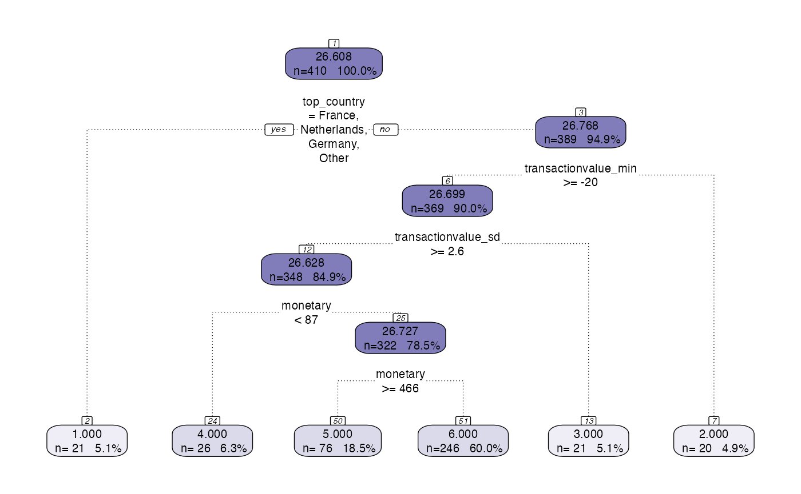

Output_Layer.Rmd
library(citrus)
library(dplyr)
#>
#> Attaching package: 'dplyr'
#> The following objects are masked from 'package:stats':
#>
#> filter, lag
#> The following objects are masked from 'package:base':
#>
#> intersect, setdiff, setequal, unionThe CITRUS package is built in a modular fashion, where the last module of the pipeline is the output table. The purpose of this module is to produce an understandable output from the segmentation models that explains how the input data has been divided.
Currently the output table takes the input data and a segmentation model object as inputs and produces a table displaying the segment number and some summary statistics. The summary statistics are dependent on the variables used to segment that are defined in the segmentation_variables section of the model object, all variables in that list will be aggregated by segment. Depending on the column type, different aggregations are used, for categorical columns, the mode and top 5 categories are calculated for each segment, for numeric columns, the mean and range by segment are provided.
There are visualisations that explain the different segments in a similar way to the table that can be seen in https://peak-ai.github.io/CITRUS/articles/Visualisations.html
In order to run the output table, a segmentation model output is required. The below code creates the segmentation model output that is run through the output table function to produce the table displayed.
hyperparameters <- list(dependent_variable = 'response',
min_segmentation_fraction = 0.05,
number_of_personas = 6,
print_plot = FALSE,
print_safety_check=20)
formatted <- preprocess(citrus::transactional_data,
categories = c('country'),
numeric_operation_list = c('min', 'sd'),
target = 'desc_chars',
target_agg = 'mean')
#> [1] "Please ensure columns are renamed accordingly:"
#> [1] "Customer Identifier: customerid"
#> [1] "Transaction Identifier: transactionid"
#> [1] "Transaction Date: orderdate"
#> [1] "Value Column: transactionvalue"
#> [1] "Target column: desc_chars (mean)"
#> Calculating target values
validate(formatted, supervised = TRUE, hyperparameters = hyperparameters)
#> [1] TRUE
model <- tree_segment(formatted, hyperparameters)
model <- tree_segment_prettify(model,print_plot = T)
model <- tree_abstract(model, citrus::preprocessed_data)
model_management(model,hyperparameters)
output_table(citrus::preprocessed_data,model)
#> Warning: `summarise_each_()` was deprecated in dplyr 0.7.0.
#> Please use `across()` instead.
#> Warning: `funs()` was deprecated in dplyr 0.8.0.
#> Please use a list of either functions or lambdas:
#>
#> # Simple named list:
#> list(mean = mean, median = median)
#>
#> # Auto named with `tibble::lst()`:
#> tibble::lst(mean, median)
#>
#> # Using lambdas
#> list(~ mean(., trim = .2), ~ median(., na.rm = TRUE))
#> # A tibble: 6 × 16
#> segment n mean_value percentage frequency_mean frequency_range
#> <int> <int> <dbl> <chr> <dbl> <chr>
#> 1 1 21 23.7 5.1% 17.6 1 - 84
#> 2 2 20 28.0 4.9% 15.6 1 - 96
#> 3 3 21 27.9 5.1% 18.8 2 - 63
#> 4 4 26 25.4 6.3% 1.88 1 - 5
#> 5 5 76 26.2 18.5% 43.4 1 - 297
#> 6 6 246 26.9 60% 20.8 1 - 96
#> # … with 10 more variables: monetary_mean <dbl>, monetary_range <chr>,
#> # recency_mean <dbl>, recency_range <chr>, top_country_mode <chr>,
#> # top_country_top5 <chr>, transactionvalue_min_mean <dbl>,
#> # transactionvalue_min_range <chr>, transactionvalue_sd_mean <dbl>,
#> # transactionvalue_sd_range <chr>Currently, the output function is set to produce the above outputs only. Functionality could be added in to customise the output table and provide more default functions or even add custom functions to aggregate on.